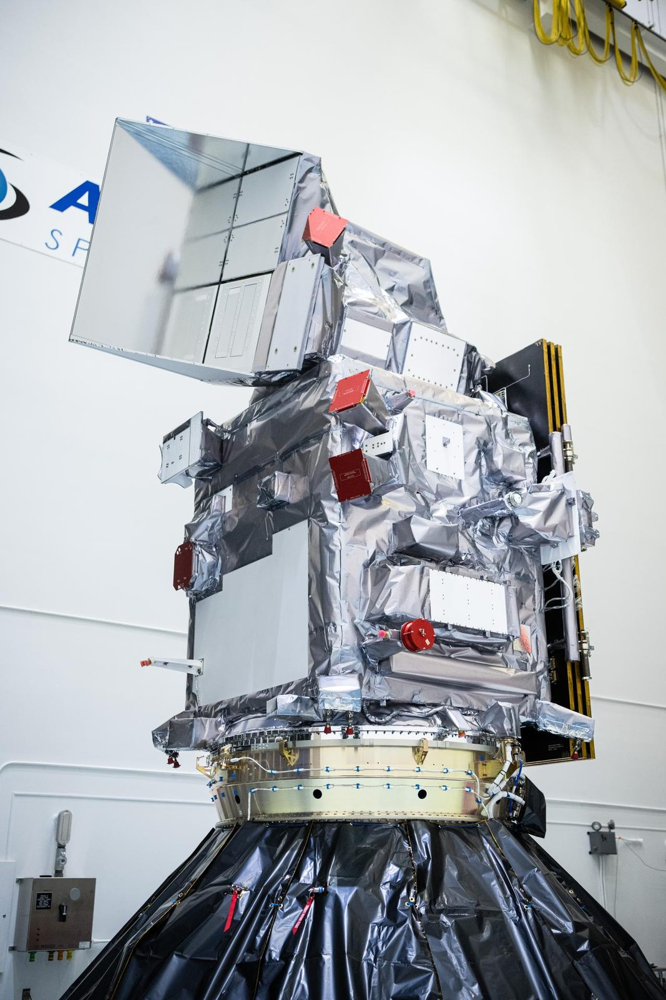
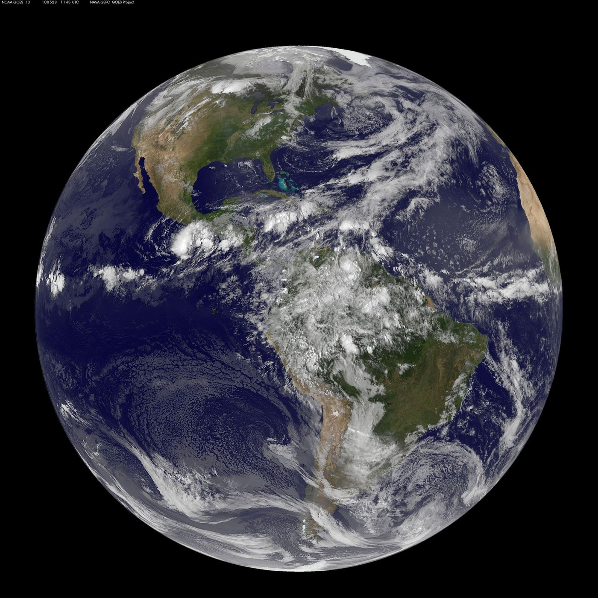
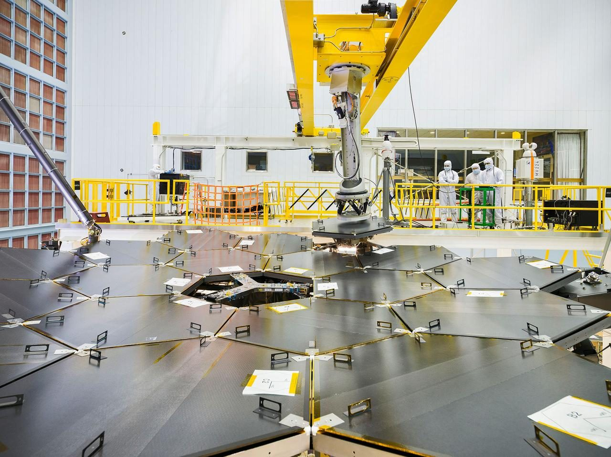

A partner the mission can trust.
SSAI delivers mission-critical science, engineering, and technology to the agencies that explore, observe, and defend. For more than four decades, we have turned complex science into systems that perform when the mission cannot fail, from NASA and NOAA to defense and national security. We engage as a certified woman-owned small business under NAICS 541715, prime or subcontractor, with the identifiers, certifications, and vehicles gathered here.
Turning science into mission advantage.
SSAI delivers for the Department of Defense and the national-security community, the Intelligence Community, and federal civilian agencies including NASA (Goddard and Langley), NOAA, USGS, EPA, USDA, GSA, the Department of Commerce, and the Department of the Interior, alongside defense labs. Our science, engineering, and IT professionals have become a fixture of the programs that ask the hardest questions about our planet and our security.
That breadth reaches well beyond the federal government. SSAI supports state and local missions, including Los Angeles World Airports and the Los Angeles Unified School District, commercial partners, and international engagements such as the World Bank. One standard of rigor, applied wherever it is needed.
 NASA / Goddard Space Flight Center / Bill Hrybyk
NASA / Goddard Space Flight Center / Bill Hrybyk
One standard of rigor, wherever the mission leads.
We serve the people who explore, observe, and defend, across six markets. The same engineering, data, and operations rigor proven on the nation's hardest science missions performs wherever the mission cannot fail, with defense and national security at the leading edge.
Defense & National Security
We give warfighters and defense labs the high-reliability engineering, secure systems, and AI/ML analytics that hold up under pressure. Built for national security, engineered to work the first time.
DoD · Defense LabsIntelligence Community
We equip analysts with cleared personnel, zero-trust architectures, and environmental and geospatial intelligence, so the agencies that protect the nation turn data into decision advantage at the highest levels of trust.
IC · Cleared supportFederal Civilian
We support the scientists, forecasters, and mission operators at NASA (Goddard and Langley), NOAA, USGS, EPA, USDA, GSA, the Department of Commerce, and the Department of the Interior with research, instrument engineering, mission operations, and IT.
NASA · NOAA · USGS · EPAState & Local
We bring mission-grade engineering and analytics to the public sector, with proven delivery for Los Angeles World Airports and the Los Angeles Unified School District.
LAWA · LAUSDCommercial
We put nearly five decades of rigor in instrument engineering, data systems, and modeling to work for commercial partners wherever serious science and engineering have to perform.
Commercial partnersOCONUS / International
We carry the work beyond U.S. borders for international partners such as the World Bank, delivered to the same standard as every domestic mission.
International · World BankStraightforward to work with.
Engage SSAI through the GSA Multiple Award Schedule (MAS), contract 47QRAA23D0014, and OASIS Small Business. As a certified woman-owned small business under NAICS 541715, we offer both prime and subcontract pathways across federal acquisition.
Whether you need a prime that can carry a complex, high-reliability program or a subcontractor that strengthens your team's past performance and small-business standing, we are positioned to engage on the vehicle that fits your acquisition.
Three steps to begin the work.
Engaging SSAI is straightforward. Review the one-page capability statement and our past-performance record, confirm the vehicle that fits your acquisition (GSA MAS or OASIS Small Business, prime or subcontract), and reach our business-development team at BD@ssaihq.com to scope the work.
Certified for mission-critical work.
Our certifications mean we can take on complex, high-reliability software and engineering, and meet the standards that flagship missions and national-security programs demand.
ISO 9001:2015
ISO 9001:2015 Quality Management certification, audited and maintained across our scientific and technical delivery.
AS9100
AS9100 aerospace quality management, the standard expected for flight-grade hardware, engineering, and manufacturing.
CMMI Level 3
CMMI Maturity Level 3 for Development: a disciplined, repeatable process across the full software and engineering life cycle.
Top Secret FCL
Top Secret Facility Clearance and ITAR registration, with a workforce experienced in the controlled environments that defense and national-security programs require.
Top Secret · ITAR RegisteredWhat the certifications let us carry.
Maturity, quality, and security certifications are not decoration. They are the gate to the work, signaling that SSAI can be trusted with high-reliability software, flight-grade engineering, and the data systems missions cannot afford to have fail. The capability statement lays out the full picture in one page.
- High-reliability software: the discipline to build systems that operate missions and safeguard national data for decades.
- Mission-grade engineering: the process rigor that flight programs and their primes expect from every team seat we fill.
- Cleared, secure delivery: a Top Secret Facility Clearance and ITAR registration for the work that demands them.
- Small-business strength: set-aside eligibility under NAICS 541715 that adds value to prime teams and to agencies' small-business goals.

NASA / Goddard Space Flight CenterOne partner, mission-ready capability.
SSAI brings together three wholly-owned subsidiaries, giving the mission a single, accountable source for engineering, manufacturing, cybersecurity, and precision fabrication.
Advanced Mission Partners
We build the electronics that fly. Manufacturing, engineering services, EEE parts expertise, and precision production carry hardware from prototype board to flight, designed to work every time.
Electronics & ManufacturingElucidation Concepts, LLC
We make systems smarter and secure. Cybersecurity solutions, systems engineering, system integration testing, and test and evaluation deliver the mission assurance that programs depend on.
Cyber & Systems EngineeringSigma Engineering & Fabrication, Inc.
We machine the parts the mission cannot do without. Precision machining, manufacturing, and material expertise, delivered with the quality and speed that flight programs require.
Precision MachiningDelivering mission-critical science and engineering.
Explore more than twenty mission and technical case studies, the record of what it looks like when SSAI partners on the work that matters most.
Roman · PACE · Landsat 9
Leading the electrical engineering on the Roman Space Telescope's Wide Field Instrument, the OCI aboard PACE, and TIRS-2 aboard Landsat 9, sensors that had to work the first time.
The GOES-R Program
Running the GOES-R series Integration & Test program and continuing to support GOES operations from NOAA's Satellite Operations Facility, the weather and space-weather watch the nation relies on.
On-orbit · operatingTEMPO & Satellite Retrievals
Building the data pipelines behind TEMPO at the ASDC DAAC, and the machine-learning models behind accurate satellite retrievals across modern Earth-observing missions.

NASA/NOAA GOES Project, Goddard Space Flight Center NASA (MODIS / NASA Goddard Space Flight Center)
NASA (MODIS / NASA Goddard Space Flight Center)

NASA / Goddard Space Flight Center